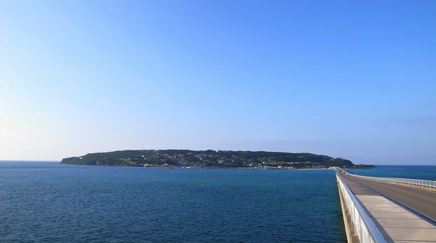

古宇利島について
古宇利島は、沖縄本島北部にあるエメラルドグリーンの海に囲まれた小さな島です。2005年に隣の屋我地島との間に古宇利大橋が開通し、車で行ける離島となりました。橋を渡る際には、うちなーんちゅ（沖縄人）も絶賛するほど透明度が高い海の間を車で走り抜けることができ、その景色の素晴らしさからたくさんの観光客が訪れる島となっています。
島の入り口にはすぐビーチがあり、シュノーケリングでサンゴ礁を覗いてみれば、岸からそう遠くない場所でも南国特有の鮮やかな魚たちを見ることができます。この本島有数の美しい海での海水浴はもちろんのこと、夕暮れには綺麗な夕日が、夜になれば満天の星空を臨むことができるのも古宇利島の魅力です。
島内には昔ながらの古民家やさとうきび畑があり、沖縄の原風景が今も色濃く残っています。こういったのどかな自然の中を、レンタサイクルでゆっくりと散策するのも人気の過ごし方です。また、飲食店や宿泊施設もあるため、丸一日の滞在はもちろん、長期滞在も可能です。
古宇利島は古くから「恋の島」や「神の島」であるという伝承があります。これは沖縄版「アダムとイブ」のような言い伝えが残っており、「こうりじま」の語源が「恋島（くいじま）」だと言われているためです。そのため、全国からカップルが訪れる島となっています。